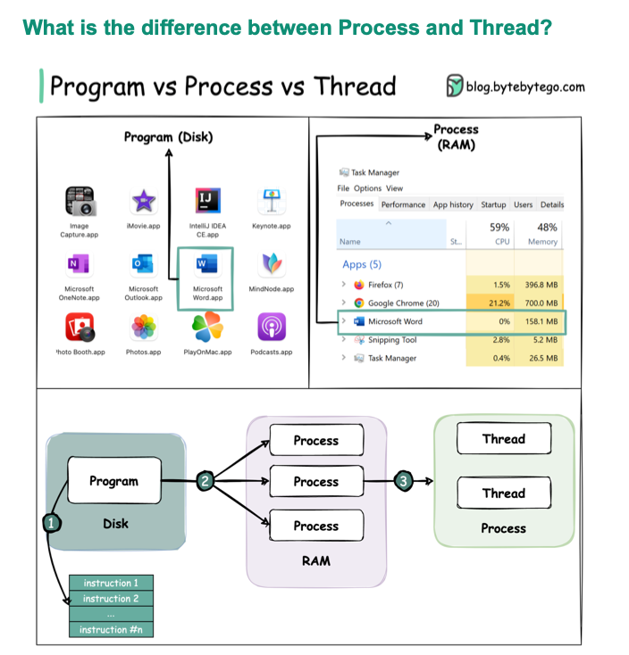

Cs Basic
Last updated: Apr 17, 2026Table of Contents
- 目錄
- 1. 程式 / 進程 / 執行緒
- 三者的區別
- 進程 vs 執行緒
- 執行緒的三種狀態
- 並行（Concurrency）vs 並行（Parallelism）
- 2. 記憶體管理
- 記憶體區域劃分
- Stack vs Heap
- 垃圾回收（GC）
- 3. 作業系統核心概念
- Context Switch（上下文切換）
- CPU 排程演算法
- 死鎖（Deadlock）
- 進程間通訊（IPC）
- 虛擬記憶體與分頁
- 4. 網路基礎
- TCP vs UDP
- TCP 三次握手
- HTTP 狀態碼
- HTTP/1.1 vs HTTP/2 vs HTTP/3
- HTTPS 與 TLS 握手
- 5. 資料結構速查
- 時間複雜度總覽
- 圖（Graph）演算法
- 6. 演算法複雜度
- Big-O 速查
- 排序演算法比較
- 常見演算法模式
- 7. 常見面試題
- Q1：進程和執行緒的主要差別？何時用哪個？
- Q2：什麼是 Deadlock？如何避免？
- Q3：Stack Overflow 是什麼原因造成的？
- Q4：Hash Map 的實作原理？如何解決 Hash 衝突？
- Q5：Binary Search 的邊界條件如何處理？
- Q6：如何判斷一個演算法是否需要 Dynamic Programming？
- Q7：TCP 為什麼需要三次握手而不是兩次？
CS 基礎概念
目錄
1. 程式 / 進程 / 執行緒
三者的區別
| 概念 | 說明 |
|---|---|
| 程式（Program） | 儲存在磁碟上的靜態程式碼檔案，尚未執行 |
| 進程（Process） | 程式載入記憶體後的執行實例，有獨立的記憶體空間 |
| 執行緒（Thread） | 進程內的執行單位，同一進程的執行緒共享記憶體空間 |
程式（Program）= 食譜
進程（Process）= 廚師照著食譜煮菜的過程（獨立的鍋碗瓢盆）
執行緒（Thread）= 多個廚師同時在同一廚房裡合作

進程 vs 執行緒
| 特性 | 進程（Process） | 執行緒（Thread） |
|---|---|---|
| 記憶體空間 | 獨立（互不影響） | 共享（一個掛掉可能影響全體） |
| 通訊方式 | IPC（Pipe、Socket、共享記憶體） | 直接讀寫共享變數 |
| 切換成本 | 高（Context Switch 較重） | 低 |
| 建立成本 | 高 | 低 |
| 崩潰影響 | 不影響其他進程 | 可能讓整個進程崩潰 |
| 適用場景 | 隔離性要求高（瀏覽器 Tab） | 高效能並行（Web Server 處理請求） |
執行緒的三種狀態
新建（New）→ 就緒（Runnable）→ 執行（Running）
↑ ↓
喚醒/解鎖 等待 IO / 鎖 / sleep
↓
阻塞（Blocked）
並行（Concurrency）vs 並行（Parallelism）
- Concurrency（並發）：多個任務交替執行，同一時刻只有一個在運行（單核心）
- Parallelism（並行）：多個任務真正同時執行（多核心）
2. 記憶體管理
記憶體區域劃分
高位址
┌───────────────┐
│ Stack（堆疊） │ ← 自動管理；函數呼叫、區域變數；後進先出；容量有限
├───────────────┤
│ ↓ │
│ │
│ ↑ │
├───────────────┤
│ Heap（堆積） │ ← 手動管理（C/C++）或 GC；動態分配物件；容量大但慢
├───────────────┤
│ BSS Segment │ ← 未初始化的全域變數
├───────────────┤
│ Data Segment │ ← 已初始化的全域變數和靜態變數
├───────────────┤
│ Text Segment │ ← 程式碼（唯讀）
低位址
Stack vs Heap
| 特性 | Stack | Heap |
|---|---|---|
| 管理方式 | 自動（函數返回即釋放） | 手動 / GC |
| 速度 | 快 | 慢（需要分配和回收） |
| 大小 | 有限（預設 1～8MB） | 大（受系統記憶體限制） |
| 溢出 | Stack Overflow | OutOfMemoryError |
| 適合 | 區域變數、函數呼叫 | 物件、動態資料 |
垃圾回收（GC）
常見 GC 演算法：
| 演算法 | 說明 | 特點 |
|---|---|---|
| 標記-清除（Mark-Sweep） | 標記可達物件，清除未標記的 | 會產生記憶體碎片 |
| 標記-整理（Mark-Compact） | 標記後移動存活物件到連續區域 | 無碎片，但移動成本高 |
| 複製（Copying） | 將存活物件複製到新區域 | 無碎片，適合短命物件 |
| 分代收集（Generational） | 依物件年齡分代管理（新生代/老年代） | JVM、Python 等主流 GC 策略 |
常見 GC 問題：
- Stop-the-World（STW）：GC 執行時暫停所有應用執行緒，影響延遲
- 記憶體洩漏（Memory Leak）：物件不再使用，但仍被根物件引用，GC 無法回收
3. 作業系統核心概念
Context Switch（上下文切換）
CPU 從一個進程/執行緒切換到另一個的過程：
- 儲存當前進程的 CPU 暫存器、PC 等狀態到 PCB（Process Control Block）
- 載入下一個進程的狀態
- 切換記憶體映射（進程切換才需要，執行緒切換不需要）
成本： 執行緒切換 < 進程切換（進程需要刷新 TLB）
CPU 排程演算法
| 演算法 | 說明 | 特點 |
|---|---|---|
| FIFO / FCFS | 先來先服務 | 簡單，可能有護航效應 |
| SJF（最短工作優先） | 優先執行最短的任務 | 效率高，可能造成飢餓 |
| Round Robin | 每個進程輪流執行一個時間片 | 公平，適合互動式系統 |
| Priority Scheduling | 依優先級排程 | 可能造成低優先級飢餓 |
| MLFQ（多層佇列） | 動態調整優先級 | Linux 和現代 OS 主要使用 |
死鎖（Deadlock）
四個必要條件（Coffman Conditions）：
- 互斥（Mutual Exclusion）：資源一次只能被一個進程使用
- 持有並等待（Hold and Wait）：進程持有部分資源，等待其他資源
- 不可搶占（No Preemption）：資源不能被強制搶走
- 循環等待（Circular Wait）：進程間形成等待環
防止死鎖的方法：
- 破壞循環等待：規定獲取鎖的順序
- 使用
tryLock(timeout)避免無限等待 - 使用死鎖檢測演算法定期掃描
進程間通訊（IPC）
| 方式 | 說明 | 適用場景 |
|---|---|---|
| Pipe（管道） | 單向、親子進程間 | `ls |
| Message Queue | 消息佇列，非同步 | 解耦服務 |
| Shared Memory | 最快的 IPC，需要同步機制 | 高效能資料交換 |
| Socket | 可跨機器通訊 | 網路通訊、本地進程 |
| Signal | 非同步通知 | kill -9 PID |
| Semaphore | 用於控制資源存取 | 同步、互斥 |
虛擬記憶體與分頁
- 每個進程有獨立的虛擬位址空間，由 OS 透過 MMU 映射到實體記憶體
- 分頁（Paging）：記憶體分成固定大小的頁（通常 4KB）
- Page Fault：存取的虛擬頁不在實體記憶體，OS 從磁碟載入（IO 操作，很慢）
- TLB（Translation Lookaside Buffer）：位址轉換的快取，進程切換需要刷新
4. 網路基礎
TCP vs UDP
| 特性 | TCP | UDP |
|---|---|---|
| 連接 | 面向連接（三次握手） | 無連接 |
| 可靠性 | 可靠（確認、重傳） | 不可靠 |
| 順序 | 保證順序 | 不保證 |
| 速度 | 較慢（有確認機制） | 快 |
| 表頭大小 | 20 bytes | 8 bytes |
| 適用場景 | HTTP、FTP、Email（需完整性） | 串流、遊戲、DNS（需速度） |
TCP 三次握手
Client Server
|── SYN ──────────→| (1) Client 說：我想連線
|← SYN-ACK ────────| (2) Server 說：好，我準備好了
|── ACK ──────────→| (3) Client 說：收到，連線建立
四次揮手（斷線）：
Client Server
|── FIN ──────────→| (1) Client：我要關閉了
|← ACK ────────────| (2) Server：收到，但我還有資料要傳
|← FIN ────────────| (3) Server：我也傳完了，我要關閉
|── ACK ──────────→| (4) Client：好，連線關閉
HTTP 狀態碼
| 範圍 | 類別 | 常見範例 |
|---|---|---|
| 2xx | 成功 | 200 OK、201 Created、204 No Content |
| 3xx | 重新導向 | 301 Moved Permanently、302 Found、304 Not Modified |
| 4xx | 客戶端錯誤 | 400 Bad Request、401 Unauthorized、403 Forbidden、404 Not Found、429 Too Many Requests |
| 5xx | 伺服器錯誤 | 500 Internal Server Error、502 Bad Gateway、503 Service Unavailable、504 Gateway Timeout |
HTTP/1.1 vs HTTP/2 vs HTTP/3
| 版本 | 特性 |
|---|---|
| HTTP/1.1 | 長連接（Keep-Alive）；每個請求序列化，有 Head-of-Line Blocking |
| HTTP/2 | 多路復用（一個連接同時多個請求）；Header 壓縮（HPACK）；Server Push |
| HTTP/3 | 基於 QUIC（UDP）；解決 TCP 的 Head-of-Line Blocking；更快的連接建立 |
HTTPS 與 TLS 握手
Client Server
|─── ClientHello ────────────→| 支援的 TLS 版本、加密套件
|←── ServerHello + 憑證 ──────| 選定的加密套件、伺服器公鑰
|─── 驗證憑證 ────────────────| 確認憑證合法（CA 簽署）
|─── 交換金鑰（pre-master） ──→| 用伺服器公鑰加密
|←─ 雙方推導出對稱金鑰 ────────| 後續通訊用對稱加密
5. 資料結構速查
時間複雜度總覽
| 資料結構 | 存取 | 搜尋 | 插入 | 刪除 | 特點 |
|---|---|---|---|---|---|
| Array | O(1) | O(n) | O(n) | O(n) | 隨機存取快；插入/刪除需移動元素 |
| Linked List | O(n) | O(n) | O(1)* | O(1)* | 插入/刪除快（若已有指標）；無法隨機存取 |
| Hash Map | — | O(1) avg | O(1) avg | O(1) avg | 最快的查詢；無順序；需處理衝突 |
| Binary Search Tree | O(log n) | O(log n) | O(log n) | O(log n) | 有序；最壞 O(n)（不平衡時） |
| Balanced BST（AVL/Red-Black） | O(log n) | O(log n) | O(log n) | O(log n) | 保證平衡；Java TreeMap、C++ std::map |
| Heap | O(n) | O(n) | O(log n) | O(log n) | 快速取最大/最小值；Priority Queue |
| Stack | O(n) | O(n) | O(1) | O(1) | LIFO；函數呼叫、括號配對 |
| Queue | O(n) | O(n) | O(1) | O(1) | FIFO；BFS、任務佇列 |
圖（Graph）演算法
| 演算法 | 複雜度 | 用途 |
|---|---|---|
| BFS | O(V+E) | 最短路徑（無權重）、層序遍歷 |
| DFS | O(V+E) | 連通性、拓撲排序、迷宮 |
| Dijkstra | O((V+E) log V) | 最短路徑（無負邊） |
| Bellman-Ford | O(VE) | 最短路徑（可處理負邊） |
| Topological Sort | O(V+E) | 有向無環圖（DAG）的依賴關係排序 |
| Union-Find | O(α(n)) ≈ O(1) | 連通分量、最小生成樹（Kruskal） |
6. 演算法複雜度
Big-O 速查
| 複雜度 | 名稱 | 範例 |
|---|---|---|
| O(1) | 常數 | Hash Map 查詢、陣列隨機存取 |
| O(log n) | 對數 | Binary Search、平衡 BST 操作 |
| O(n) | 線性 | 線性搜尋、單層迴圈 |
| O(n log n) | 線性對數 | Merge Sort、Heap Sort、快速排序（avg） |
| O(n²) | 平方 | 選擇排序、插入排序、雙層迴圈 |
| O(2ⁿ) | 指數 | 暴力列舉所有子集 |
| O(n!) | 階乘 | 列舉所有排列 |
排序演算法比較
| 演算法 | 最佳 | 平均 | 最差 | 空間 | 穩定 |
|---|---|---|---|---|---|
| Bubble Sort | O(n) | O(n²) | O(n²) | O(1) | ✅ |
| Selection Sort | O(n²) | O(n²) | O(n²) | O(1) | ❌ |
| Insertion Sort | O(n) | O(n²) | O(n²) | O(1) | ✅ |
| Merge Sort | O(n log n) | O(n log n) | O(n log n) | O(n) | ✅ |
| Quick Sort | O(n log n) | O(n log n) | O(n²) | O(log n) | ❌ |
| Heap Sort | O(n log n) | O(n log n) | O(n log n) | O(1) | ❌ |
| Tim Sort | O(n) | O(n log n) | O(n log n) | O(n) | ✅ |
Tim Sort = Merge Sort + Insertion Sort，是 Java / Python 的預設排序演算法
常見演算法模式
| 模式 | 說明 | 典型題目 |
|---|---|---|
| Two Pointers | 雙指標，O(n) 解決有序陣列問題 | Two Sum（排序後）、回文 |
| Sliding Window | 固定或可變視窗在陣列上滑動 | 最大子陣列、最長無重複字串 |
| Binary Search | 有序資料的 O(log n) 搜尋 | 搜尋旋轉陣列、尋找邊界 |
| DFS / Backtracking | 窮舉所有可能，剪枝優化 | 排列、組合、N-Queens |
| BFS | 逐層搜尋，找最短路 | 最短路徑、圖的層序 |
| Dynamic Programming | 拆分子問題，儲存中間結果 | 背包問題、LCS、股票問題 |
| Greedy | 局部最優推導全局最優 | 區間排程、Huffman 編碼 |
| Divide and Conquer | 分治，再合併 | Merge Sort、快速冪 |
7. 常見面試題
Q1：進程和執行緒的主要差別？何時用哪個？
進程：完全隔離，一個崩潰不影響其他進程。適合需要安全隔離的場景（如瀏覽器的每個分頁是獨立進程）。
執行緒：共享記憶體，切換成本低，溝通容易。適合高並發場景（如 Web Server 用執行緒池處理多個請求）。
Q2：什麼是 Deadlock？如何避免？
Deadlock 發生需要同時滿足：互斥、持有並等待、不可搶占、循環等待。
避免方式：
- 規定所有執行緒獲取鎖的順序一致（破壞循環等待）
- 使用
tryLock(timeout)避免無限等待 - 盡量減小鎖的粒度和持有時間
Q3：Stack Overflow 是什麼原因造成的？
Stack 記憶體有限（通常 1～8MB），常見原因：
- 無終止條件的遞迴（最常見）
- 函數呼叫層數過深
- 在 Stack 上宣告了過大的陣列
解決方式：將遞迴改為迭代（用顯式 Stack）、增加 Stack 大小（治標）。
Q4：Hash Map 的實作原理？如何解決 Hash 衝突？
- 計算 key 的 hash 值，對陣列大小取模，得到陣列索引
- 將 key-value 存入對應的 bucket
衝突解決方式：
- 鏈結串列法（Chaining）：同一 bucket 的元素串成 Linked List（Java HashMap 使用此方法，超過 8 個時轉為紅黑樹）
- 開放位址法（Open Addressing）：衝突時探測下一個空位（Linear Probing / Quadratic Probing）
負載因子（Load Factor）：元素數 / bucket 數，超過閾值（Java 預設 0.75）時擴容（rehash）。
Q5：Binary Search 的邊界條件如何處理？
python
def binary_search(nums, target):
left, right = 0, len(nums) - 1
while left <= right: # ≤ 確保單元素也能處理
mid = left + (right - left) // 2 # 防止 overflow
if nums[mid] == target:
return mid
elif nums[mid] < target:
left = mid + 1
else:
right = mid - 1
return -1
常見變形：
- 找最左邊的符合元素：
right = mid - 1（當找到時繼續向左） - 找最右邊的符合元素：
left = mid + 1（當找到時繼續向右）
Q6：如何判斷一個演算法是否需要 Dynamic Programming？
DP 適用的兩個特徵：
- 最優子結構（Optimal Substructure）：問題的最優解包含子問題的最優解
- 重疊子問題（Overlapping Subproblems）：同樣的子問題被反覆計算
解題框架：
- 定義
dp[i]的含義 - 找狀態轉移方程（從前一狀態推導當前狀態）
- 確定初始值（base case）
- 確定計算順序
Q7：TCP 為什麼需要三次握手而不是兩次？
兩次握手的問題：假設 Client 的第一個連線請求因網路延遲，在 Client 以為失敗後才到達 Server，Server 回覆後以為連線建立，但 Client 已不再理會。三次握手讓 Client 也確認 Server 可以接收，避免伺服器資源浪費。
本質是：三次握手確保雙方都能發送和接收，是建立可靠連線所需的最少次數。